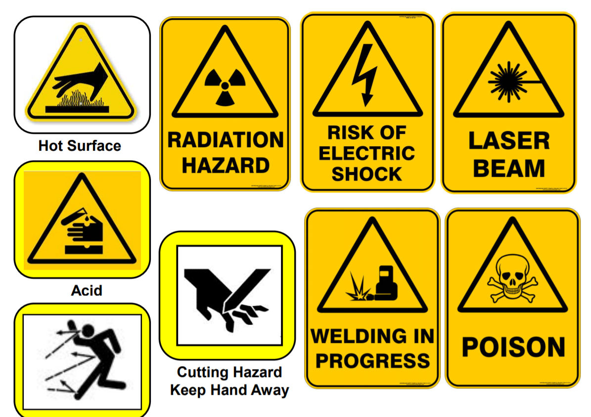
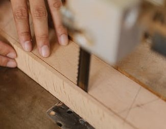
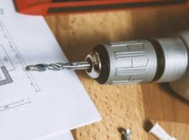

Safety guidelines
- In case of emergency:
- For ambulance, call 995.
- For SCDF, call 995.
- For police, call 999.
- Your name.
- Your location.
- The nature of the emergency.
- All injuries must be reported, no matter how minor, to supervising staff.
-
Propper attire must be worn while in the fablab:
- Loose items such as necklaces and bracelets are not allowed.
- Long pants must be worn to prevent cuts and scratches.
- Covered shoes preferably with an anti slip sole should be worn.
- We are not allowed to operate any machinery unless we are trained on the safe usage of the machine and have permission to do so.
- Our work area must be cleaned before leaving the workshop, a cluttered workspace is prone to accidents.
Warning symbols
Below are some common warning symbols and explanations of what these symbols mean.

Hazards
Below are some hazards that could potentially cause injury.
Gears

Blades

Drills and chucks

Cutters